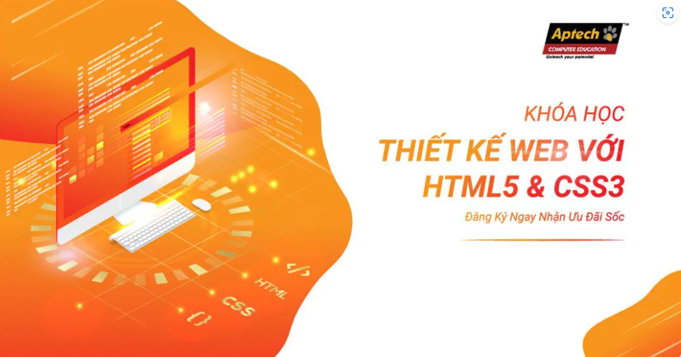

Năm 1980, nhà vật lý Tim Berners-Lee, một nhà thầu tại CERN, đã đề xuất và tạo mẫu ENQUIRE, một hệ thống cho các nhà nghiên cứu CERN sử dụng và chia sẻ tài liệu. Năm 1989, Berners-Lee đã viết một bản ghi nhớ đề xuất một hệ thống siêu văn bản dựa trên Internet.[3] Berners-Lee xác định rõ HTML và viết phần mềm trình duyệt và máy chủ vào cuối năm 1990. Năm đó, Berners-Lee và kỹ sư hệ thống dữ liệu CERN Robert Cailliau đã hợp tác để cùng yêu cầu tài trợ, nhưng dự án không được CERN chính thức thông qua. Trong ghi chú cá nhân của mình[4] từ năm 1990, ông đã liệt kê[5] "một số trong nhiều lĩnh vực mà siêu văn bản được sử dụng" và đặt một cuốn bách khoa toàn thư lên hàng đầu. Bài viết này chúng ta sẽ tìm hiểu HTML là gì và liên quan đến HTML
HTML thực tế được biết đến là cụm từ viết tắc của Hypertext Markup Language – tức Ngôn ngữ đánh dấu siêu văn bản. Theo đó, bạn có thể hiểu đơn giản rằng,HTML sẽ được dùng để tạo cũng như cấu trúc các thành phần liên quan trong trang web hay cả ứng dụng, phân tách các đoạn văn, các thẻ heading, các links, các title,…
Phần mềm Notepad++ là phần mềm miễn phí được nhiều người ưa chuộng với. Ưu điểm của phần mềm này chính là tạo ra môi trường lập trình nhỏ gọn, tiện lợi đi cùng với nhiều tiện ích giúp người dùng tối ưu hóa trong xây dựng website, phần mềm. Hiện nay, phần mềm NotePad++ đã hỗ trợ được nhiều loại ngôn ngữ lập trình khác nhau như: PHP, CSS, C++, Java, C#, XML, HTML, Pascal,…
Tải vềTrong HTML có rất nhiều thuật ngữ khác nhau cần người dùng hiểu để có thể sử dụng một các dễ dàng và thuận lợi hơn. Sau đây, chúng ta sẽ tìm hiểu 3 thuật ngữ phổ biến thường xuyên xuất hiện trong tệp HTML, chính là Elements, Tags, Attributes.